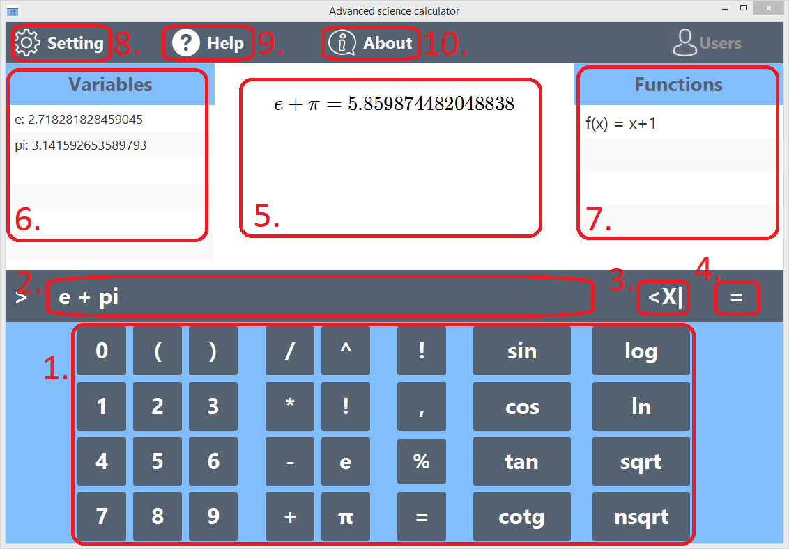

Uživatelká příručka
Instalace software
Windows
- Spusťte instalátor advanced-scientific-calculator-x.x-setup.exe
- pokračujte podle instrukcí instalátoru.
- Odinstalátor najdete ve stejném adresáři jako spustitelný soubor asc.exe.
Linux
- Spusťte skript install.sh
- Pro odinstalaci spusťte skript uninstall.sh
Uživatelské rozhraní

- Tlačítka pro zadání vstupních hodnot
- Vstupní řádek
- Tlačítko pro smazání jednoho znaku
- Tlačítko pro odeslání vstupu
- Výstup
- Seznam definovaných proměnných
- Seznam definovaných funkcí
- Nastavení, zdali se u proměnných zobrazí jejich název, nebo hodnota
Základní operace
Veškeré výpočty a příkazy se zadávají na vstupní řádek, lze řetězit několik operací za sebou. Pro zadání vstupu použít jak klávesnici, tak tlačítka uživatelského rozhraní. Při zadání výrazu kalkulačka automaticky přehledně rozepíše vstup a zobrazí výsledek.
Kalkulačka podporuje následující operace:
-
Sčítání (+), odčítání (-), násobení (*),
dělení (/), modulo (%).
Použití: operand operátor operand, např. 1 + 2. Operace se vyhodnocují zleva doprava, tudíž výraz 4 / 2 * 2 se bude rovnat 4. -
Goniometrické funkce: sin, cos, tan, cotg.
Použití: názvy funkcí lze napsat na klávesnici nebo pomocí tlačítek uživatelského rozhraní. Argumenty funkce je nutné zapsat do závorky za jméno funkce, např. sin(0). Funkce počítají v radiánech. -
Faktoriál (!)
Použití: N!, kde N je kladné celé číslo. Kalkulačka nepodporuje multifaktoriál. -
Závorky
Lze zanořit libovolný počet závorek. Vyhodnocují se postupně zevnitř ven.
Proměnné
Kalkulačka umožňuje definovat si vlastní proměnné, které lze využít ve výrazech a funkcích. Definované proměnné se nachází ve sloupci Proměnné. Předem definované proměnné jsou pi = 3.1416 a e = 2.71828. Použití: název_proměnné = výraz, kde výraz může obsahovat libovolné operace, funkce, i jiné proměnné. Proměnná se uloží stisknutím enter. Následně se při zapsání název_proměnné dosadí uložený výraz.
Funkce
Kalkulačka podporuje definice vlastních funkcí. Definované funkce se nachází ve sloupci Funkce
Použití: název_funkce(proměnná) = výraz, výraz lze skládat z jiných proměnných i funkcí.
Příklad: Vytvoření funkce, která počítá obsah kruhu s proměnlivým poloměrem se definuje jako obsah(r) = pi * r * r. Následné použití pro poloměr 2 bude obsah(2).